먼저 생각해 보세요.
매점에서 '~ 주세요'라고 주문할 때 쓰는 말은 무엇일까요?
Ich möchte는 '~을 원해요'라는 뜻으로, 주문할 때 가장 많이 써요.
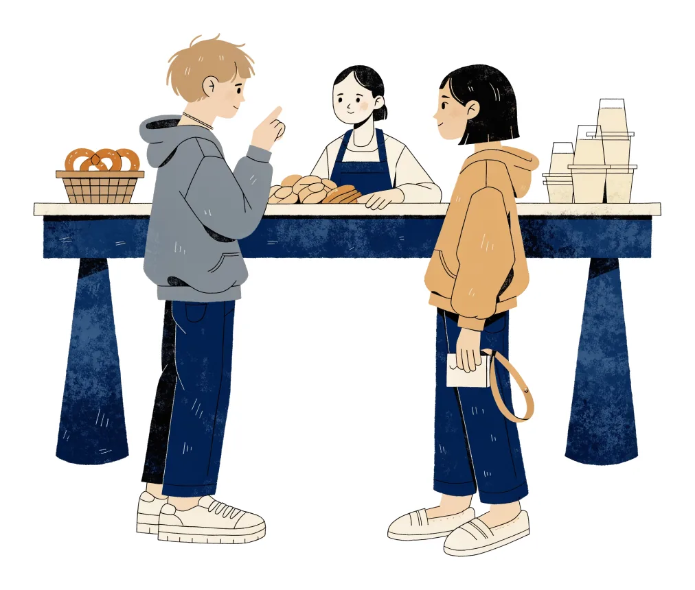
긴 쉬는 시간이에요. Yuna와 Lukas가 학교 매점(der Schulkiosk) 앞에 줄을 섰어요.
눌러서 들어 보세요.
먼저 생각해 보세요.
매점에서 '~ 주세요'라고 주문할 때 쓰는 말은 무엇일까요?
Ich möchte는 '~을 원해요'라는 뜻으로, 주문할 때 가장 많이 써요.
Lektion 6의 낱말 다섯 개를 다시 떠올려 보세요.
문법 Akkusativ (den, einen, keinen), möchten, essen, nehmen
이 과를 마치면 매점에서 먹고 싶은 것을 독일어로 주문할 수 있어요.
긴 쉬는 시간, 학교 매점 앞이에요.
들으면서 찾아보세요. 브레첼은 얼마인가요?
저녁 식사 시간이에요. 요리사인 Thomas가 음식을 차렸어요.
들으면서 찾아보세요. Yuna가 먹지 않는 음식은 무엇인가요?
두 대화를 듣고 답하세요.
Lukas nimmt ein Käsebrötchen.
Yuna möchte einen Kakao.
Yuna는 브레첼과 사과 주스(Apfelsaft)를 주문했어요.
Yuna isst keinen Fisch.
브레첼은 얼마인가요?
오늘 저녁 메뉴는 무엇인가요?
Yuna는 저녁 식사 때 무엇을 마시나요?
낱말 24개예요. 낱말이나 예문 앞의 단추를 누르면 소리가 나요. 명사는 der, die, das를 색으로 구분했어요.
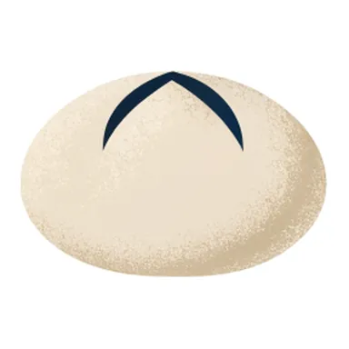
das Brötchen, die Brötchen 작은 빵
Ich möchte ein Brötchen.작은 빵 하나 주세요.
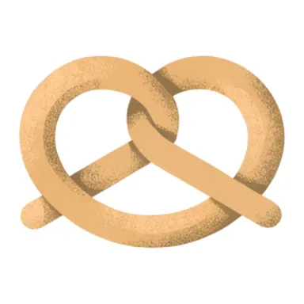
die Brezel, die Brezeln 브레첼
Was kostet die Brezel?브레첼은 얼마예요?
das Brot, die Brote 빵
Ich esse gern Brot mit Käse.나는 치즈를 올린 빵을 좋아해요.
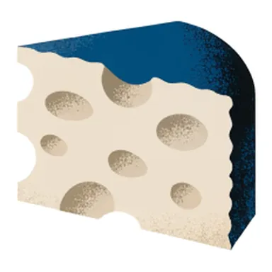
der Käse 치즈
Der Käse ist lecker.그 치즈는 맛있어요.
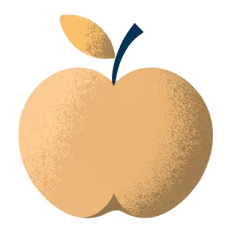
der Apfel, die Äpfel 사과
Ich nehme einen Apfel.나는 사과 하나를 먹을래요.
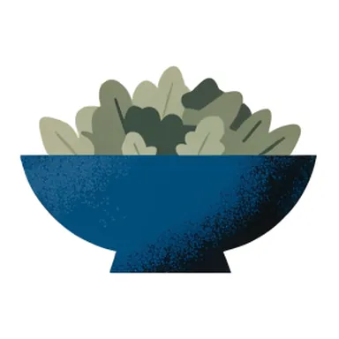
der Salat, die Salate 샐러드
Ich nehme zuerst den Salat.나는 샐러드 먼저 먹을래요.
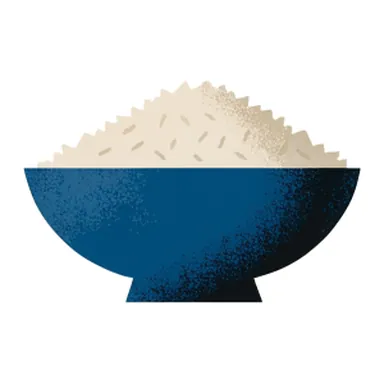
der Reis 밥, 쌀
Der Reis ist auch lecker.밥도 맛있어요.
das Fleisch 고기
Isst du Fleisch?고기 먹니?
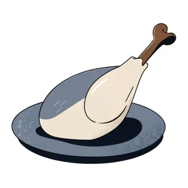
das Hähnchen, die Hähnchen 닭고기
Wie schmeckt das Hähnchen?닭고기 맛이 어때요?
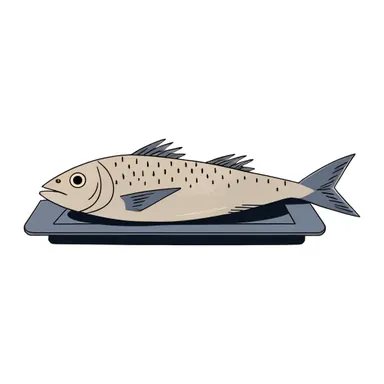
der Fisch, die Fische 생선, 물고기
Ich esse keinen Fisch.나는 생선을 안 먹어요.
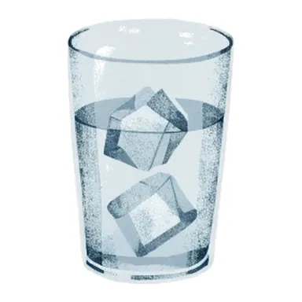
das Wasser 물
Ich möchte Wasser, bitte.물 주세요.
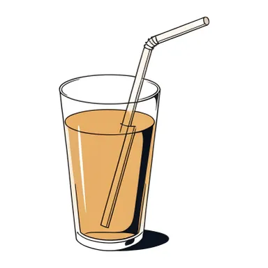
der Saft, die Säfte 주스
Ich möchte einen Apfelsaft.사과 주스 하나 주세요.
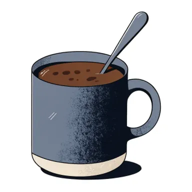
der Kakao 코코아
Lukas trinkt einen Kakao.Lukas는 코코아를 마셔요.
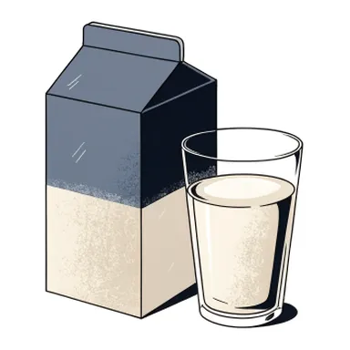
die Milch 우유
Ich trinke gern Milch.나는 우유를 좋아해요.
essen (du isst, er isst) 먹다
Was isst du gern?넌 뭘 즐겨 먹어?
trinken 마시다
Was trinkst du?넌 뭘 마셔?
nehmen (du nimmst, er nimmt) 고르다, 가지다
Was nimmst du?넌 뭐 먹을 거야?
möchten 원하다
Ich möchte eine Brezel, bitte.브레첼 하나 주세요.
kosten 값이 ~이다
Das kostet zwei Euro.그건 2유로예요.
der Euro, die Euro 유로
Das macht zusammen fünf Euro.모두 5유로예요.
der Hunger 배고픔
Ich habe Hunger.배고파요.
der Durst 목마름
Hast du Durst?목말라?
lecker 맛있는
Das ist lecker!맛있어요!
satt 배부른
Ich bin satt.배불러요.
이 과의 낱말로 여덟 문제를 풀어요.
가격은 유로와 센트를 차례로 읽어요. 쉼표는 읽지 않아요. 1유로는 ein Euro라고 해요. 줄을 누르면 소리가 나요.
예문을 보고 답해 보세요.
der Salat가 nehmen 뒤에 오면 der는 어떻게 바뀌나요?
규칙
essen, trinken, nehmen, möchten, haben 뒤에 오는 '~을, ~를'은 4격(Akkusativ)이에요. der 명사만 모양이 바뀌어요. der는 den, ein은 einen, kein은 keinen이 돼요.
| der Salat | das Brötchen | die Brezel | |
|---|---|---|---|
| Das ist … | der, ein, kein Salat | das, ein, kein Brötchen | die, eine, keine Brezel |
| Ich nehme … | den, einen, keinen Salat | das, ein, kein Brötchen | die, eine, keine Brezel |
주의 6과에서 배운 Ich habe einen Bruder와 같은 규칙이에요. '무엇을?'에 답하는 말이 4격이에요.
예문을 보고 답해 보세요.
ich möchte와 모양이 같은 것은 무엇인가요?
규칙
möchten은 '~을 원해요'라는 뜻이에요. ich와 er, sie의 모양이 möchte로 같아요. 주문할 때 끝에 bitte를 붙이면 공손한 말이 돼요.
| möchten | möchten | ||
|---|---|---|---|
| ich | möchte | wir | möchten |
| du | möchtest | ihr | möchtet |
| er, sie | möchte | sie | möchten |
주의 du möchtest와 ihr möchtet에는 e가 하나 더 들어가요. 발음하기 쉽게 하려고 넣는 e예요.
예문을 보고 답해 보세요.
nehmen은 du와 함께 쓰면 어떤 모양이 되나요?
규칙
essen과 nehmen도 5과에서 배운 동사들처럼 du와 er, sie에서 모음 e가 i로 바뀌어요.
| essen | nehmen | trinken | |
|---|---|---|---|
| ich | esse | nehme | trinke |
| du | isst | nimmst | trinkst |
| er, sie | isst | nimmt | trinkt |
| wir | essen | nehmen | trinken |
주의 nehmen은 모음만 바뀌지 않아요. h가 빠지고 m이 두 개가 돼요. trinken은 모양이 바뀌지 않는 동사예요.
매점에서 나누는 대화를 듣고 답하세요.
Am Kiosk
Frau Hallo! Was möchtest du?
Elif Ich möchte einen Apfel und ein Wasser, bitte.
Frau Gern. Möchtest du auch eine Brezel?
Elif Nein, danke. Was kostet das?
Frau Ein Euro neunzig.
Elif는 무엇을 샀나요?
모두 얼마인가요?
Elif는 브레첼도 샀나요?
가격을 듣고 고르세요.
얼마인가요?
Zwei Euro fünfzig, bitte.
얼마인가요?
Das macht vier Euro achtzig.
얼마인가요?
Der Salat kostet drei Euro dreißig.
매점의 가격표를 보고 답하세요.
Schulkiosk
| Essen und Trinken | Preis |
|---|---|
| Brezel | 1,20 € |
| Käsebrötchen | 1,80 € |
| Salat | 3,50 € |
| Apfel | 0,60 € |
| Wasser | 1,00 € |
| Apfelsaft | 1,20 € |
Was kostet der Salat?
Der Apfel kostet sechzig Cent.
Das Wasser kostet zwei Euro.
물(Wasser)은 1유로예요.
Lukas에게 2유로가 있어요. 무엇을 살 수 있나요?
치즈 빵은 1,80유로예요. 브레첼과 사과 주스는 모두 2,40유로라서 돈이 모자라요.
알맞은 관사를 고르세요.
Ich nehme Apfelsaft.
Ich möchte Brezel.
Lukas isst Käsebrötchen.
Ich esse Fisch.
Emma nimmt Salat.
Ich trinke Milch.
알맞은 동사 형태를 고르세요.
Was du gern?
Lukas einen Kakao.
Ich eine Brezel.
Was ihr?
Yuna keinen Fisch.
Was du?
낱말을 순서대로 눌러 문장을 만드세요.
브레첼 하나 주세요.
샐러드는 얼마예요?
나는 생선을 안 먹어.
나는 사과 주스를 마실래.
독일어와 뜻을 짝지으세요.
듣고 그대로 써 보세요.
Ich möchte eine Brezel. 브레첼 하나 주세요.
Was kostet das? 얼마예요?
Das Essen ist fertig! 밥 다 됐다!
Was möchtest du? 뭐 먹을래?
Ich möchte …, bitte. … 주세요.
Ich nehme … 저는 …로 할게요.
Was kostet …? …은 얼마예요?
Das kostet … Euro. …유로예요.
Das macht zusammen … 모두 …예요.
Ich esse gern … 나는 …을 즐겨 먹어요.
Ich esse keinen Fisch. / Ich esse kein Fleisch. 나는 생선을 안 먹어요. / 나는 고기를 안 먹어요.
Ich trinke lieber … 나는 …을 더 즐겨 마셔요.
Guten Appetit! 맛있게 드세요!
Das ist lecker. 맛있어요.
Nein, danke. Ich bin satt. 아니요, 괜찮아요. 배불러요.
대화 A에서 역할을 하나 고르세요. 상대의 말은 음성으로 나오고, 내 차례에는 직접 말해요.
먹을 것과 마실 것을 ein, eine, einen과 함께 적고, 먹지 않는 음식도 하나 적으세요. 완성된 문장을 소리 내어 읽어 보세요.
Ich habe Hunger.
Ich möchte eine Brezel und einen Apfelsaft, bitte.
Ich esse keinen Fisch.
Was kostet das?
Was isst du gern?
독일 친구가 Was isst und trinkst du gern?이라고 물었어요. 대답하는 글을 써 보세요.
Ich esse gern Reis und Hähnchen. Ich esse auch gern Brot mit Käse. Ich esse keinen Fisch. Ich trinke gern Apfelsaft. Und du? Was isst du gern?
다 쓴 뒤에 확인해 보세요.
Ich kann sagen, was ich gern esse und trinke.즐겨 먹고 마시는 것을 말할 수 있어요.
Ich kann am Kiosk etwas bestellen.매점에서 먹고 싶은 것을 주문할 수 있어요.
Ich kann nach dem Preis fragen.가격을 묻고 알아들을 수 있어요.